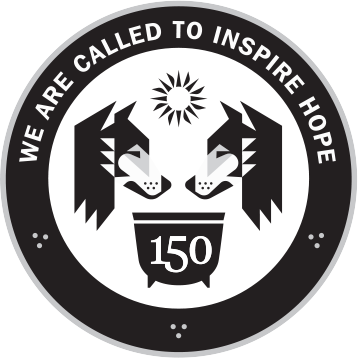

150-Signature • Color
150-Signature • Black & White
When do I use this logo?
- Supports a wide range of communication and materials related to non-signature events.
- May be used in circle or not on merchandise. (Please include “Loyola University Chicago”)
Where can I get this logo?
- Request files via UMC's online form.
- Please allow at least three working days for consideration of your request.
Preferred accompanying Loyola mark

Note: Remove promise line.
Examples
(To come)
150-Signature • Color

150-Signature • Black & White
Intended Use
Reserved for communication and material supporting select anniversary events as determined by 150th Committee.
Download Files
Request files via UMC's online form. Please allow 3 days for processing.
Examples
(To come)
150-Wordmark
Color
150-Wordmark
Black & White
150-Wordmark
Reverse
When do I use this logo?
- Use to reference the anniversary when imprint size is a concern, such as on pens or other items.
- May be used instead of existing Loyola marks on official communication, i.e., email signatures, presentations, etc.
- Employ only for the duration of the celebration, which will end in May 2021. Do not use on stationery, signs, etc., and other items with longer shelf lives.
Where can I get this logo?
Download Logo Set: EPS PNG
Download Powerpoint template: PPTX
Directions on applying to email signatures
Preferred accompanying Loyola mark
No additional logo needed.
Examples
(To come)

Horizontal "Stacked" Logo
Color
When do I use this logo?
- Always an option, especially to represent Loyola in evergreen applications.
Where can I get this logo?
Visit Downloads.
For a fuller explanation of University brand guidelines, consult our Style Guide.